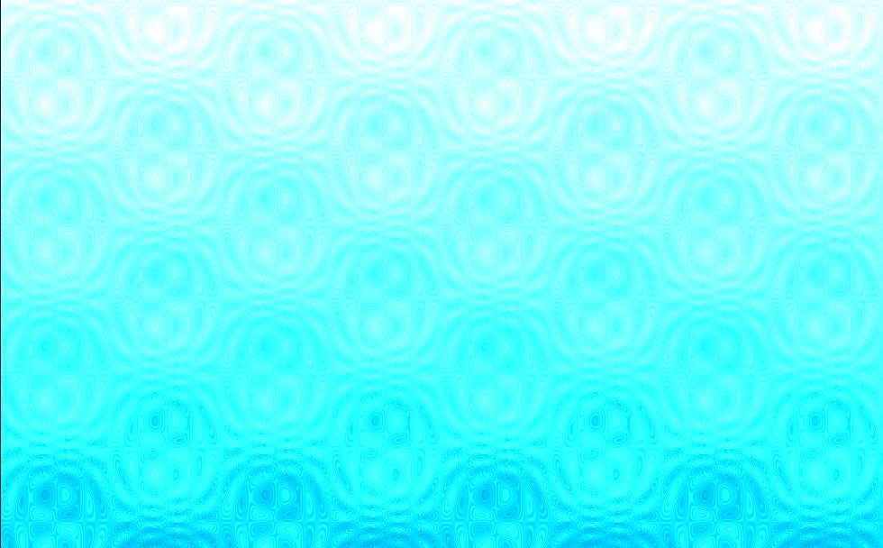
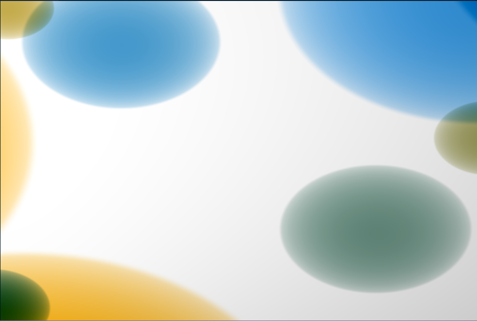

shader programming
GLSL
レンダリングにおいて，シェーダはパイプラインのひとつ．
- 頂点シェーダ：座標変換，陰影処理など．
- テッセレーションシェーダ：頂点シェーダから送られてきたポリゴンを分割する．
- ジオメトリシェーダ：ポリゴンに対して頂点の増減をする．増やすだけでなく，減らすこともできる
- ラスタライズ：頂点シェーダで決まった座標と色をもとに，ピクセル単位で描画情報を設定する．補間するかんじ？
- ピクセルシェーダ：ラスタライズされたピクセル一つ一つに対して何らかの処理（何らかの処理って？）を行い，GPUに返す
- レンダーバックエンド：ピクセルシェーダが決定した情報の書き込みを判断する．いくつかのテストがあるらしい．
GLSL はシェーダを担当するが，シェーダだけではパイプラインは成り立たないので， 全体を管理する必要がある． この全体を管理するのが OpenGL で，これを JavaScript から操作できるようにしたのが WebGL．
101
画面を赤く塗るだけのコード
#version 300 es
precision highp float;
out vec4 fragColor;
void main(){
fragColor = vec4(1.0, 0.0, 0.0, 1.0);
}
補間関数を使う
#version 300 es
precision highp float;
out vec4 fragColor;
uniform vec2 u_resolution;
void main(){
vec2 pos = gl_FragCoord.xy / u_resolution.xy;
vec3[4] col3= vec3[](
vec3(1.0, 0.0, 0.0),
vec3(0.0, 1.0, 0.0),
vec3(0.0, 0.0, 1.0),
vec3(1.0,1.0,0.0)
);
pos.x *= 2.0;
int index = int(pos.x); // float -> int
vec3 color = mix(mix(col3[index], col3[index+1],fract(pos.x)), mix(col3[index+2], col3[index+3],fract(pos.x)),fract(pos.y));
fragColor = vec4(color, 1.0);
}
ポスタリゼーション
#version 300 es
precision highp float;
out vec4 fragColor;
uniform vec2 u_resolution;
void main(){
vec2 pos = gl_FragCoord.xy / u_resolution.xy;
vec3[4] col3= vec3[](
vec3(1.0, 0.0, 0.0),
vec3(0.0, 1.0, 0.0),
vec3(0.0, 0.0, 1.0),
vec3(1.0,1.0,0.0)
);
pos.x *= 4.0;
int index = int(pos.x); // float -> int
pos = floor(pos) + smoothstep(0.4, 0.5, fract(pos));
pos = pos/4.0;
vec3 color = mix(mix(col3[0], col3[1],fract(pos.x)), mix(col3[2], col3[3],fract(pos.x)),fract(pos.y));
fragColor = vec4(color, 1.0);
}
極座標
float atan2(float y, float x){
if(x == 0.0){
return sign(x) * PI /2.0;
}else{
return atan(y, x); // arctan で，tan(y) = x の偏角
}
}
vec2 xy2pol(vec2 xy){
// xy.x: x座標
// xy.y: y座標
return vec2(atan2(xy.y, xy.x), length(xy));
}
vec2 pol2xy(vec2 pol){
// pol.x: 偏角
// pol.y: 動径
return vec2(cos(pol.x), sin(pol.x)) * pol.y;
}
void main(){
vec2 pos = gl_FragCoord.xy / u_resolution.xy;
vec3[6] col3= vec3[](
vec3(1.0, 0.0, 0.0),
vec3(0.0, 1.0, 0.0),
vec3(0.0, 0.0, 1.0),
vec3(1.0,1.0,0.0),
vec3(1.0),
vec3(0.0)
);
pos = 2.0 * pos.xy - vec2(1.0);
pos = xy2pol(pos); // 極座標に変換
pos.x = pos.x /PI + 5.0; // [0,PI) -> [0,5)
int index = int(pos.x); // 偏角を col3 の色に対応
vec3 col = mix(col3[index%2], col3[index+1%2], fract(pos.x));
vec3 coll = mix(col3[4], col, pos.y);
fragColor = vec4(coll, 1.0);
}
色々あそぶ
#version 300 es
precision highp float;
out vec4 fragColor;
uniform vec2 u_resolution;
uniform float u_time;
uniform vec2 r; // resolution
void main(){
vec2 pos = gl_FragCoord.xy / u_resolution.xy;
pos *= 2.0;
pos -= 1.0;
float l = 0.1*abs(sin(u_time)) / length(pos);
fragColor = vec4(vec3(l), 1.0);
}
#version 300 es
precision highp float;
out vec4 fragColor;
uniform float u_time;
uniform vec2 mouse;
uniform vec2 u_resolution;
void main(){
vec2 pos = gl_FragCoord.xy / u_resolution.xy;
for(float i = 1.0; i<4.0; i++){
pos.y += i*0.1/i*sin(pos.x*i*i*u_time*0.5) * sin(pos.y*i*i*0.5*u_time);
}
vec3 col;
col.r = pos.y - 0.1;
col.g = pos.y + 0.8;
col.b = pos.y + 1.0;
fragColor = vec4(col,1.0);
}

#version 300 es
precision highp float;
out vec4 fragColor;
uniform float u_time;
uniform vec2 mouse;
uniform vec2 u_resolution;
void main()
{
vec2 uv = gl_FragCoord.xy / u_resolution.xy;
// background
vec3 color = vec3(0.8 + 0.2*uv.y);
// bubbles
for( int i=0; i<40; i++ )
{
// bubble seeds
float pha = sin(float(i)*546.13+1.0)*0.5 + 0.5;
float siz = pow( sin(float(i)*651.74+5.0)*0.5 + 0.5, 4.0 );
float pox = sin(float(i)*321.55+4.1) * u_resolution.x / u_resolution.y;
// bubble size, position and color
float rad = 0.1 + 0.5*siz;
vec2 pos = vec2( pox, -1.0-rad + (2.0+2.0*rad)*mod(pha+0.1*u_time*(0.2+0.8*siz),1.0));
float dis = length( uv - pos );
vec3 col = mix( vec3(0.94,0.3,0.0), vec3(0.1,0.4,0.8), 0.5+0.5*sin(float(i)*1.2+1.9));
// col+= 8.0*smoothstep( rad*0.95, rad, dis );
// render
float f = length(uv-pos)/rad;
f = sqrt(clamp(1.0-f*f,0.0,1.0));
color -= col.zyx *(1.0-smoothstep( rad*0.95, rad, dis )) * f;
}
// vigneting
color *= sqrt(1.5-0.5*length(uv));
fragColor = vec4(color,1.0);
}
